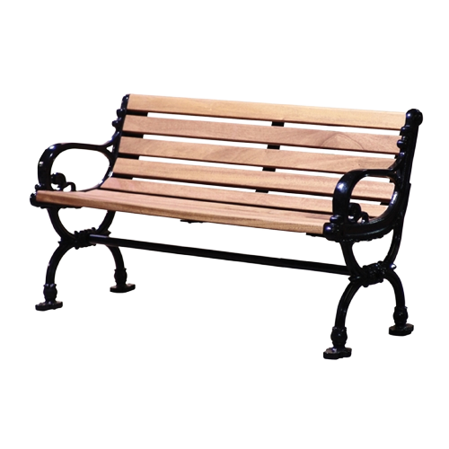

- In the menu bar at the top, select 'Map View'.
- On the map view page, in the menu bar at the top, select the year of map you want to view.
- In the menu bar at the top, select the type of classification you want to view. 'Classified as' provides a overlay on the map with the different types of classifications. 'Classified by' provides an overlay depending on who determined the classification. Default is the classification by the classifier algorithm of the tool.
How to use HAUP
Urban Development
To view greenery on historic maps
